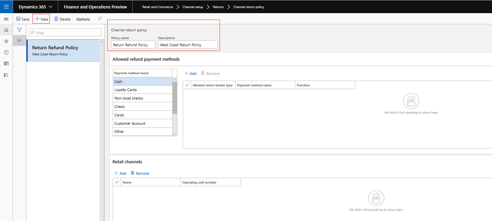
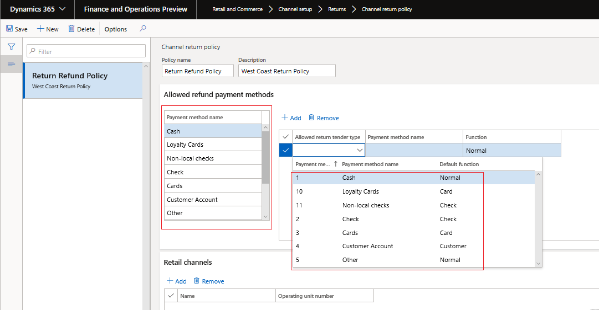
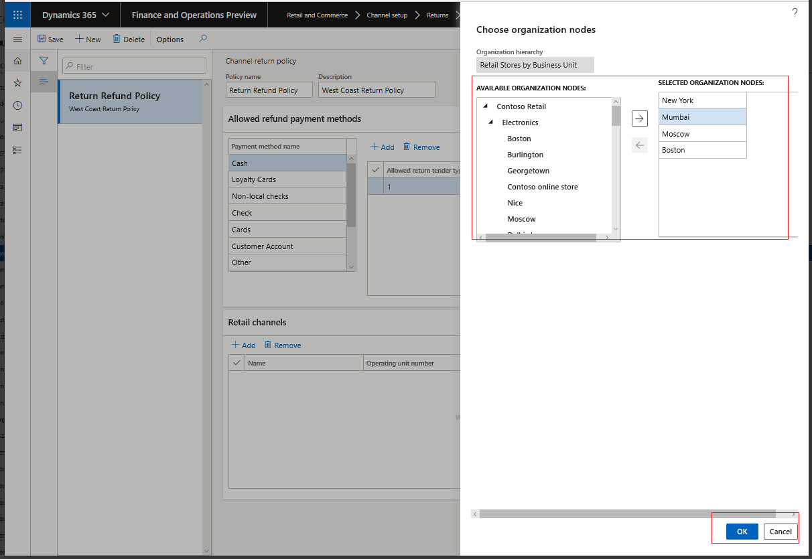
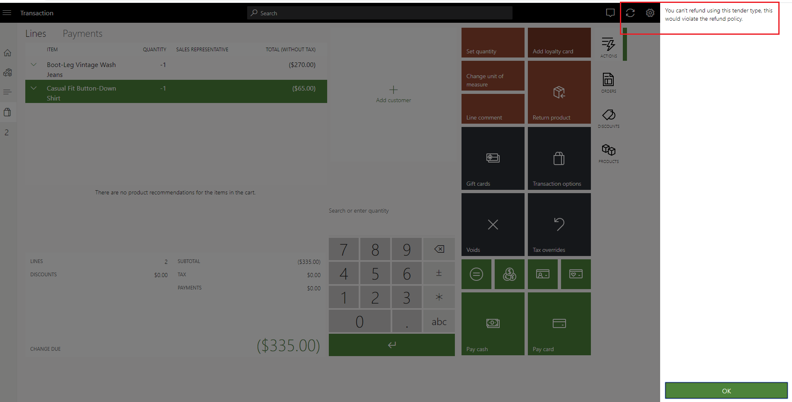
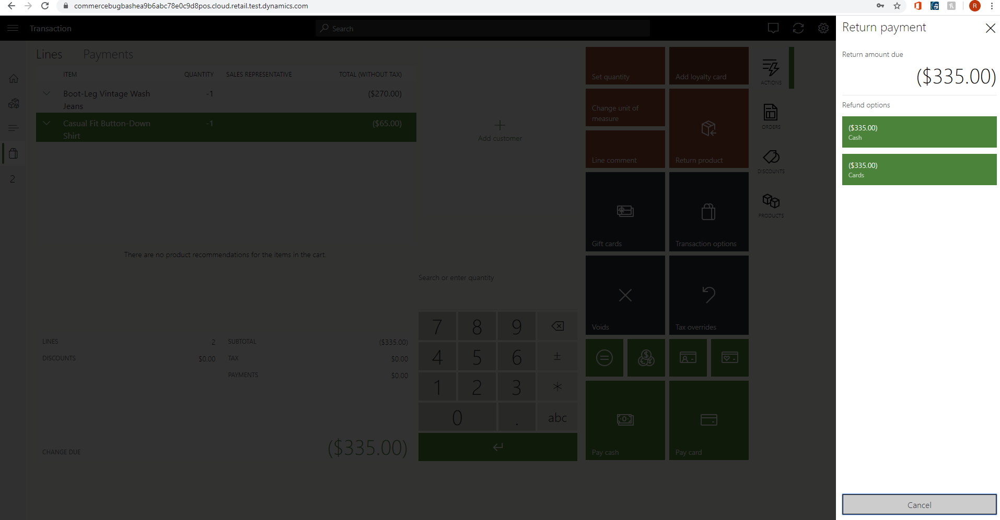

Erstellen und Aktualisieren einer Rücklieferungs- und Rückerstattungsrichtlinie für einen Kanal
Important
Dynamics 365 Retail ist jetzt Dynamics 365 Commerce und bietet umfassende Handelsfunktionen für alle Kanäle – von E-Commerce über Shops bis hin zu Callcentern. Weitere Informationen zu diesen Änderungen finden Sie unter Microsoft Dynamics 365 Commerce.
Übersicht
Die Kanal-Rücklieferungsrichtlinie in Dynamics 365 Commerce ermöglicht Einzelhändlern, Durchsetzungsbestimmungen für Zahlungsmittel festzulegen, die für die Verarbeitung einer Rücklieferung an einem POS-Gerät (Point of Sale) zugelassen werden können.
In diesem Thema werden die Schritte beschrieben, wie Sie eine Rücklieferungs- und Rückerstattungsrichtlinie für einen Kanal einrichten.
Der Geltungsbereich der Richtlinie beschränkt sich derzeit auf die Festlegung der Zahlungsmittel, die für einen Kanal zulässig sind. Die Liste „Zulässig“ basiert auf den Zahlungsmethoden, die für den Kauf verwendet wurden. Beispiel:
- Wenn ein Kauf mit einer Geschenkkarte getätigt wurde, besteht die Shoprichtlinie darin, Rückerstattungen nur für eine neue Geschenkkarte zu verarbeiten oder eine Gutschrift für den Shop zu erteilen.
- Wenn ein Verkauf mit Bargeld erfolgte, sind die zulässigen Optionen für die Rückerstattung Bargeld, Geschenkkarte und Kundenkonto, jedoch keine Kreditkarte.
Aktivieren der Rücklieferungsrichtlinie
Gehen Sie wie folgt vor, um die Funktion der Kanal-Rücklieferungsrichtlinie zu aktivieren:
- Gehen Sie in Dynamics 365 Commerce zum Arbeitsbereich Funktionsverwaltung.
- Suchen Sie in der Liste der Funktionsnamen nach der Funktion Aktivieren der Kanal-Rücklieferungsrichtlinien.
- Wählen Sie Jetzt aktivieren.
Konfigurieren der Rücklieferungsrichtlinie
Folgen Sie diesen Schritten, um eine Rücklieferungsrichtlinie für einen Einzelhandelsshop oder einen Online-Einzelhandelskanal zu konfigurieren.
Gehen Sie zu Retail und Commerce > Kanaleinrichtung > Rücklieferungen > Kanal-Rücklieferungsrichtlinie.
Wählen Sie Neu aus, um eine neue Rücklieferungsrichtlinienvorlage zu erstellen. Um eine vorhandene Vorlage zu verwenden, wählen Sie die Vorlage im linken Bereich aus. Fügen Sie für neue Vorlagen einen Namen und eine Beschreibung hinzu, anhand derer Sie die Richtlinie identifizieren können, wenn sie auf den Kanal angewendet wird.

Definieren Sie im Abschnitt Zulässige Rückerstattungszahlungsmethoden die zulässigen Rücklieferungszahlungsmittel, die für jede Zahlungsmethode spezifisch sind. 
Important
- Die Zahlungsmethoden leiten sich aus den für die Organisation festgelegten Zahlungsmethoden ab.
- Durch Hinzufügen eines zulässigen Rücklieferungszahlungsmitteltyps für jede aufgelistete Zahlungsmethode wird sichergestellt, dass Rücklieferungen an den zulässigen Rücklieferungszahlungsmitteltyp erfolgen können.
Ordnen Sie die Rücklieferungsrichtlinienvorlage den Filialen zu, in denen sie verwendet werden soll. Wählen Sie in der Registerkarte Retail Channels die Option Hinzufügen aus und ordnen Sie die verfügbaren Kanäle zu.
- Wählen Sie im Dialogfenster Organisationsknoten auswählen die Filialen, Regionen und Organisationen aus, denen die Vorlage zugeordnet werden soll.
- Jeder Filiale kann nur eine Rücklieferungsrichtlinienvorlage zugeordnet werden.
- Verwenden Sie die Pfeiltasten, um Filialen, Regionen oder Organisationen auszuwählen.
- Das Gültigkeitsdatum der Richtlinie ist das Datum, an dem die Richtlinien auf die Kanäle angewendet und die Kanalvorgänge ausgeführt werden.

Führen Sie auf der Seite Verteilungszeitplan den Vorgang 1070 durch, um die Kanal-Rücklieferungsrichtlinie für den POS verfügbar zu machen.
Vorschau der Kanal-Rücklieferungsrichtlinie im POS
Folgen Sie den Schritten in einem der folgenden Beispiele, um die zulässigen Rücklieferungszahlungsmitteltypen im POS anzuzeigen.
- Melden Sie sich als Kassierer oder Manager am POS an.
- Wählen Sie unter Schicht und Kasse die Option Erfassung anzeigen aus.
- Wählen Sie die Transaktion aus, die Teil der Rücklieferung ist.
- Wählen Sie die Artikel, die erstattet werden sollen, und die Zahlungsmethode aus.
- Befindet sich das ausgewählte Zahlungsmittel in der Liste der zulässigen Rücklieferungszahlungsmitteltypen, kann der Kassierer die Transaktion abschließen.
- Wenn das ausgewählte Zahlungsmittel nicht zulässig ist, wird eine Fehlermeldung angezeigt.
- Wählen Sie Fälliger Betrag aus, um eine Liste aller zulässigen Rücklieferungszahlungsmitteltypen anzuzeigen.
– oder –
- Melden Sie sich als Kassierer oder Manager am POS an.
- Wählen Sie Rücklieferungstransaktion aus und geben Sie die Quittungs-ID mit einem Barcode-Scan oder durch manuelle Eingabe ein.
- Wählen Sie die Transaktion aus, die Teil der Rücklieferung ist.
- Wählen Sie die Artikel, die erstattet werden sollen, und die Zahlungsmethode aus.
- Befindet sich das ausgewählte Zahlungsmittel in der Liste der zulässigen Rücklieferungszahlungsmitteltypen, kann der Kassierer die Transaktion abschließen.
- Wenn das ausgewählte Zahlungsmittel nicht zulässig ist, wird eine Fehlermeldung angezeigt.
- Wählen Sie Fälliger Betrag aus, um eine Liste aller zulässigen Rücklieferungszahlungsmitteltypen anzuzeigen.

